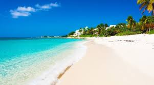
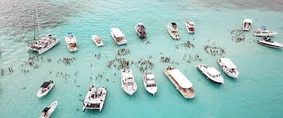
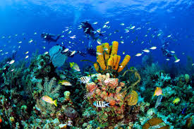

As Ilhas Cayman são um território britânico localizado no Caribe, famoso por suas praias de areia branca, mar azul-turquesa e excelente infraestrutura turística. O destino é ideal para quem busca tranquilidade, luxo e algumas das melhores experiências de mergulho do mundo.

Uma das praias mais bonitas e famosas do Caribe.

Experiência única nadando com arraias em águas cristalinas.

Recifes de coral e vida marinha impressionante.
Chegada e descanso na Seven Mile Beach.
Passeio para Stingray City e mergulho com arraias.
Exploração dos recifes de coral e atividades aquáticas.
Dia livre para aproveitar praias, restaurantes e compras.
Entre em contato conosco para reservar sua viagem para as Ilhas Cayman e garantir uma experiência inesquecível!
📞 (85) 9 8940-9459
📧 minerioviagens@gmail.com